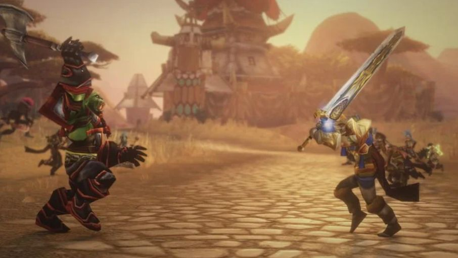
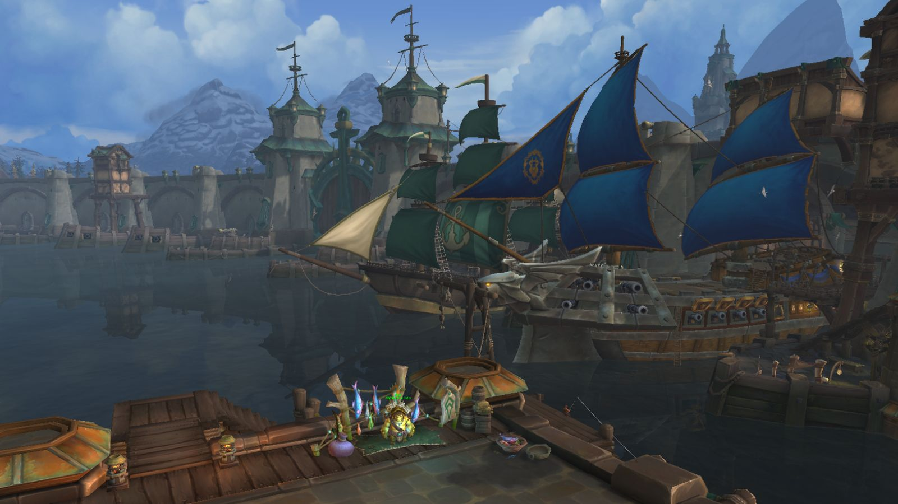
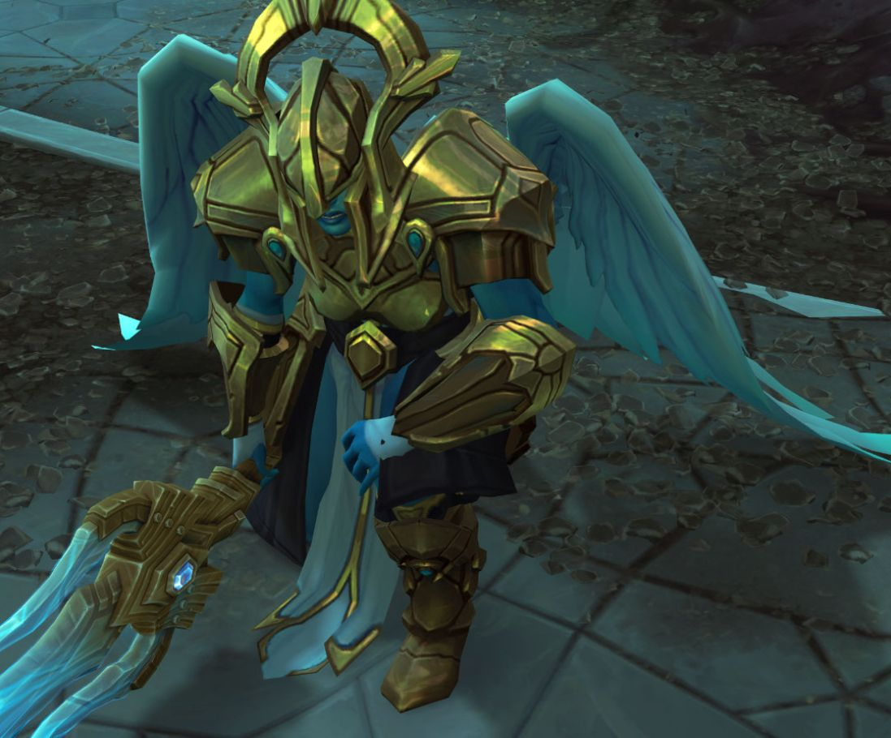
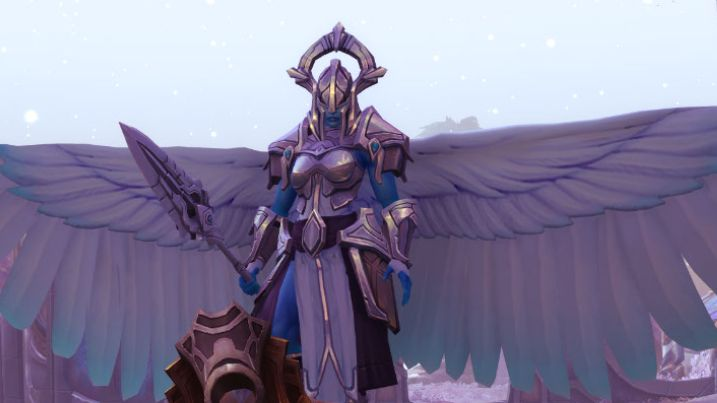
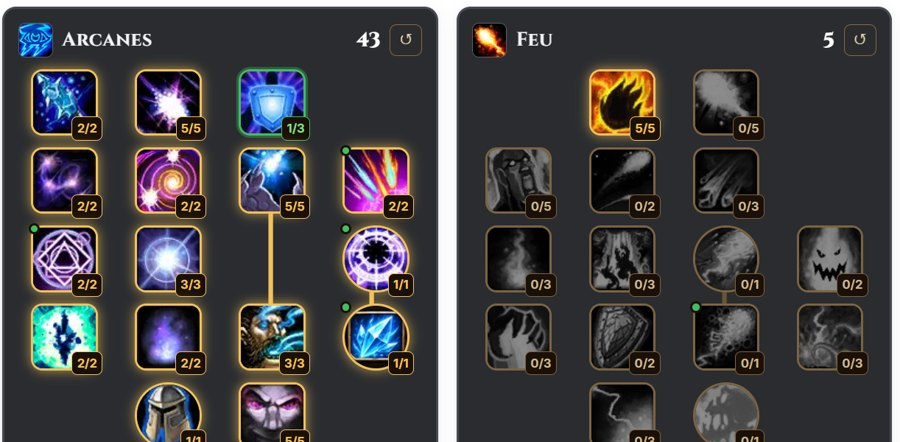

PvP
Bien débuter
Classes Donjons & Raids
Donjons & Raids

Legacy
Talents Calendrier
Calendrier
Toutes les news

Quête hebdomadaire du niveau 60 : jusqu'à 100 po à Hache-Tripes
Trois objets à récupérer dans les trois ailes de Hache-Tripes, pour une sacoche qui vaut de 10 à 100 pièces d'or.

Patch 1.60.1.70938 : Surcharge du chaman, Calvaire et Croissance sauvage
La Surcharge du chaman Élémentaire frappe bien plus fort, Croissance sauvage profite mieux des soins, et l'hôtel des ventes attendra le 17 novembre.

Le podcast des développeurs : lore, Rives Claires, Éolides et Norfendre
Une continuité propre à Forever, des scénarios alternatifs, Arthas au Norfendre et l'Outreterre pas exclue.
Ensembles T0 : les pièces, les bonus et les donjons
Les neuf ensembles de donjon du niveau 60, leurs nouveaux bonus de 2 à 6 pièces et les boss qui les lâchent.

Monture épique du paladin (Alliance) : le guide du destrier
Composants, 350 pièces d'or et combat final en Scholomance : toutes les étapes de la quête du destrier.
Double spécialisation : 50 pièces d'or au niveau 40
Un second arbre de talents chez ton maître de classe dès le niveau 40. Avec la monture, prévois environ 150 po.

Foire de Sombrelune : le sac de 14 places pour 50 tickets
Comment réunir 50 tickets chez Yebb Neblegear avant le 15 novembre, avec la route des plumes de Mille pointes.

Correctifs du 11 novembre : Jugement du paladin, sacs de couture
Le Jugement du paladin devient une attaque à distance, les sacs de couture coûtent plus d'étoffe et la récupération d'objets est suspendue.